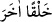
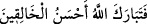

yâni bir şeye şekil veriyordun. İşte “Yapıp-yaratanların en güzeli” ifâdesinde de durum
aynıdır.”
et-Te’vîlâtü’n-Necmiyye’de der ki: “Sonra onu başka bir yaratışla” yani daha önce
yarattığımız mahlûkattan başka bir yaratılışla “insan hâline getirdik.” İnsan, onların
biçim bakımından en güzeli, istîdâdı en kâmil, değeri en yüce, rütbece en yükseği ve
fazîlet bakımından en özel olanıdır. Bu yüzden Allah: “Yapıp-yaratanların en güzeli
olan Allah pek yücedir.” buyurarak onu yarattığı zaman kendisini senâ etmiştir. Çünkü
Allah, yaratılmışların en güzelini yaratmıştır. Çünkü onu irfanın kaynağı, muhabbetin
mekânı ve ilâhî yardımın müteallakı kılmıştır.
Ey aziz! Hak Sübhânehû ve Teâlâ hazretleri arş, kürsî, levh, kalem, melâike, yıldızlar,
semâvât ve yerleri yarattı ve zât-ı mukaddesini insanın yaratılmasından sonra bu tür
övgülerle senâ etti. Bu da onların fazilet ve yüceliğinin delilidir.
Hakk’ın güzellik aynası olan lütuf yüzünü
Bir varak üzerine kim yazmıştır?
Mesnevî’de der ki:
Zühre’ye benzeyen yüzün kuşluk güneşidir
Bütün allıklar senin renginin dilencisidir
“Biz yücelttik” tacı başının üstündedir
“Biz sana verdik” gerdanlığı boynunda asılı
Bu gökyüzü “Biz onu yücelttik” sözünü hiç duydu mu?
Peki kim duydu? Gamlarla dolu şu insanoğlu!
“Vettîni”deki “İnsanı en güzel şekilde yarattık” âyetini oku
Ey dost, en değerli inci candır
Bu paha biçilmez şeyin değerini söyleyecek olsam
Ben de yanarım, duyan da yanar
Gönül ehlinden bir kısmı şöyle demiştir: Bu âyette insanoğlunun halleri, bir
makamdan bir makama terakkîsi açıklanmıştır. Onun, yüce dergâhına layık olan hamd ve
sena merasimini yerine getirecek bir dili olmadığından mukaddes zâtının övgüsü için o
insan tarafından vekâletle şöyle buyurmuştur: “Yapıp-yaratanların en güzeli olan Allah
pek yücedir.”
Rivayet edilir ki Abdullah b. Ebî Serh Rasûlullah’a gelen vahyi yazıyordu.
Peygamber (s.a.) “__WORD__ sözüne gelince, daha O yazdırmadan Abdullah hemen “__WORD__ deyiverdi. Peygamberimiz (a.s.) da: “Yaz, böyle indirildi.”
buyurdu. Bunun üzerine Abdullah şüpheye düştü. “Eğer Muhammed’e vahyediliyorsa,
bana da vahyediliyor.” dedi. Ardından kâfir olarak Mekke’ye döndü. Sonra Mekke fethi
gününde müslüman oldu. Onun küfür üzere öldüğü de söylenir.